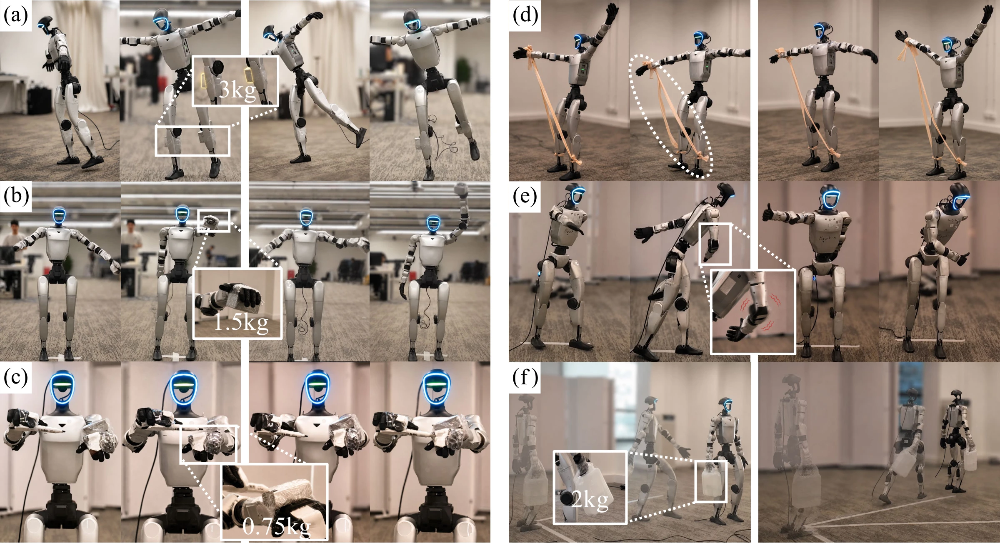
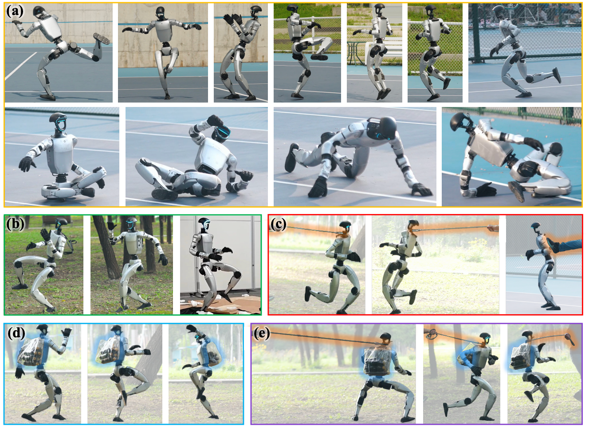
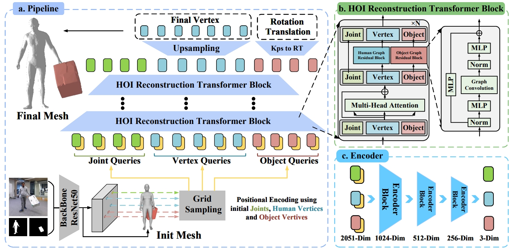

01 / 03HumanoidNDM: Closing the Training-Deployment Gap of Motion Tracking via Humanoid Neural Dynamics Model
A real-world adaptation framework for humanoid motion tracking using a learned neural dynamics model, without motion capture.
Humanoid robots.
For the real world.
I study humanoid robots and how to make them more capable in the real world.
I am currently a first-year Ph.D. student at CASIA, Galbot, and EPIC Lab (2026–present), jointly supervised by Prof. Li Yi and Prof. He Wang.
My research lies at the intersection of humanoid agility, whole-body control, and intelligent manipulation. I am interested in learning methods that connect dynamic movement and physical interaction, enabling humanoids to acquire versatile skills and adapt to the real world.
Exploring agile motion, physical interaction, and learning for the real world.

01 / 03A real-world adaptation framework for humanoid motion tracking using a learned neural dynamics model, without motion capture.

02 / 03Humanoid motion tracking under diverse motions and disturbances.

03 / 03Reconstructing human–object interactions with transformer and graph-based representations.
* Equal contribution
Interested in robotics, motion, or working together? I’d love to hear from you.
w2271762553@gmail.com